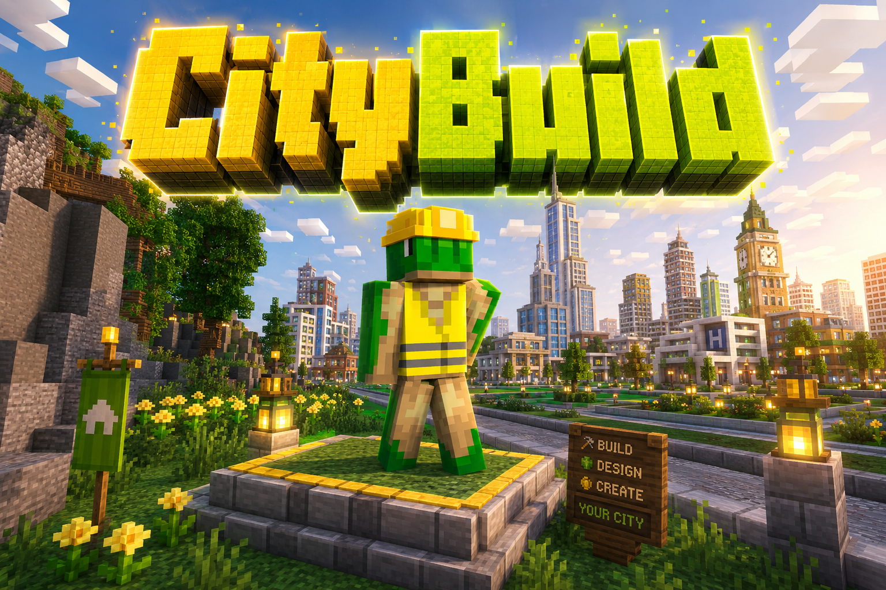
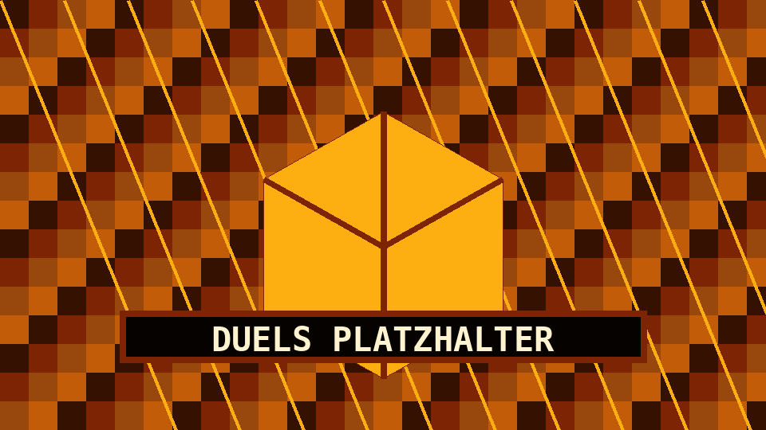
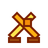
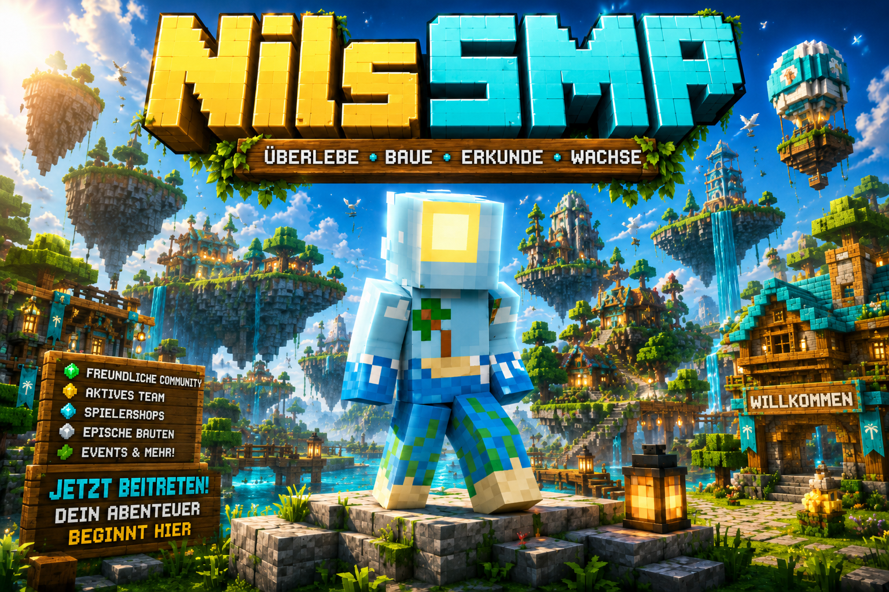
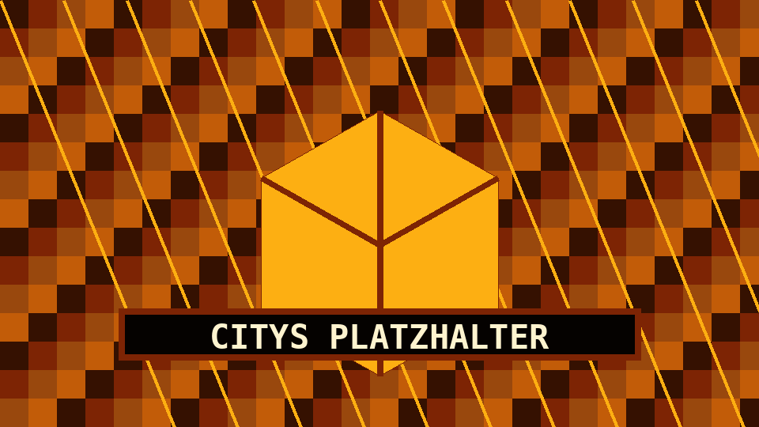
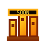

VoidSMP
VoidSMP
VoidSMP
Ein SMP-Modus auf einer Void-Map.
Ein Minecraft-Server mit SMP, CityBuild, FreeBuild, Duels und einem kommenden RP-Bereich.
Wähle deinen Bereich: VoidSMP, CityBuild, FreeBuild, Duels, NilsSMP oder den kommenden RP-Server Citys.
VoidSMP
Ein SMP-Modus auf einer Void-Map.

CityBuildEin CityBuild-Modus.
 FreeBuild
FreeBuild
Ein FreeBuild-Modus.

Duels
Ein Duels-Modus.

NilsSMPEin normaler SMP-Modus.

Kommt bald
Ein kommender RP-Server. Kommt bald.
Für NilsServer.net wird die Nutzung von LabyMod empfohlen. Besonders empfohlen ist Voice Chat über LabyMod.
Simple Voice Chat wird ebenfalls unterstützt.
Empfohlene Nutzung für das Netzwerk.
Besonders über LabyMod empfohlen.
Wird ebenfalls unterstützt.
Citys ist als kommender RP-Server vorgesehen und derzeit als „kommt bald“ gekennzeichnet.